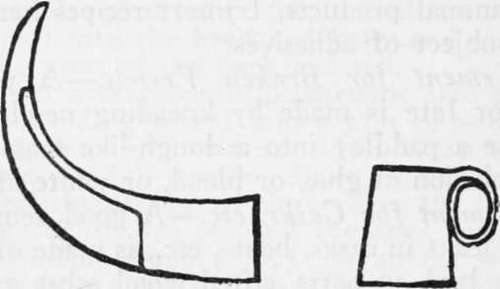

Tanning Skins. Other Animal Products. Part 3
Description
This section is from the book "Camping And Woodcraft", by Horace Kephart. Also available from Amazon: Camping and Woodcraft.
Tanning Skins. Other Animal Products. Part 3
1. Waterproof Glue
Soak the glue in water until swollen; then dissolve it by heating in four-fifths its weight of linseed oil.
2. Add some rosin to hot glue, and afterward dilute with turpentine.
3. Dissolve one pound of glue in two quarts of skim milk, by heating.
4. Take a handful of well burned quicklime and mix with it four ounces of linseed oil, rub the ingredients thoroughly together, and then boil until of the consistency of ordinary paste. Spread it on tin plates until it becomes dry and very hard. When required for use, heat it as you would common glue. This is not only waterproof, but also resists heat, and can be used as a lute for vessels.
Cements And Pastes
Although these are not all animal products, I insert recipes here while on the subject of adhesives.
5. Cement For Broken Vessels
A powerful cement or lute is made by kneading newly slaked lime (use a paddle) into a dough-like mass with ^ strong solution of glue, or blood, or white of egg.
6. Cement For Casks, Etc
A good cement for stopping leaks in casks, boats, etc., is made of tallow 25 parts, lard 40 parts, sifted wood ashes 25 parts. Mix together by heating, and apply with a knife blade that has just been heated.
7. Flour Paste That Will Keep
Make a strong tea of the bark of sassafras root. Mix flour in cold water to a thick paste, and stir into this the hot tea, gradually, until the paste is thin as wanted.
8. Mucilage Substitute
Put a teaspoonful of sugar in barely enough water to dissolve it, and let it come just to a boil.
Working In Horn
Horn is easily manipu^ lated after soaking it in boiling water. If time permits, it is best to soak it first for several day? in cold water, then boil until soft enough to mold into the desired shape. The horn must be kept free from anything sweaty or oily while being treated.
The western Indians used to make superior bows of buffalo horns, and from those of the mountain sheep, by leaving the horns in hot springs until they were perfectly malleable, then straightening them and cutting them into strips of suitable width. Two buffalo horns were pieced in the center and riveted; then bound strongly at the splice with sinew.
Turtle or tortoise-shell can be worked up in a similar way.
Horn is useful for handles, spoons, cups, and various other items of backwoods equipment. When split, flattened, and scraped, it makes good window panes where glass is unobtainable.
A Horn Cup is better than any other for one to carry with him when campaigning. It is lighter than a metal cup, does not dent nor break, and is pleasanter to drink tea or coffee from, as it is less conductive of heat.
To Make It
Select the largest ox horn you can find that has a sharp bend in it. The broader the base the better, so that the cup will not be tall and "tippy." Trim the butt end smooth and even for the bottom of the cup; then, back from this, at a distance equal to the proposed height of the cup, saw through the greater part of the horn, as shown in Fig 186, but leave enough of the top for a handle, the latter strip being about 6 inches long and 3/4-inch wide. Scrape the handle gradually down to 1/8-inch thickness at the end. Then soak the handle in a strong boiling solution of lime until it is soft, bend it backward around a stick and bind the end fast to base of handle at top, until it has cooled and hardened; then fit a wooden bottom in it, and tack and lute it in place. A good cement or lute for the purpose is either No. 4 or No. 5, among the -ecipes given above. Before putting in the bottom, scrape and sandpaper the cup inside and out. The cup can be ornamented with scrimshaw carvings, like some of the revolutionary powder horns you see in museums.
Fig. 186. Horn cup.
A Huntsman's Horn
The following description of how to make a huntsman's horn is condensed from one given a good many years ago by D. M. Morris: Select a cow's horn 14 to 16 inches long, although 12 inches will do. With a limber stick determine how far the hollow extends and saw off the tip about an inch above that point. With a gimlet bore down to the hollow, taking care to hit it fairly. Ream out the hole from 1/4 to 5-16-inch diameter. Dress the horn down with a half-round file but do not scrape it. Be careful to get a fair and even surface. To avoid working the horn too thin, press the thumb on doubtful places to see if there is any spring. Work down the neck as much as it will safely bear. A brass ferrule should now be fitted tightly around the neck to prevent the stem of the mouthpiece from splitting it. Now, to polish the horn: take a piece of sandpaper 2 or 3 inches square, and a little finer than the file, in the palm of the right hand; then, grasping the horn with the left hand, twist it around and around from end to end, occasionally rubbing it lengthwise. Continue this process with finer grades of sandpaper till the very finest has been used and complete the polishing with pumice or rotten stone and water. Then get from any dealer in musical instruments an E flat or cornet mouthpiece, fit it perfectly, drive it in tightly and your horn is complete. Or, take the small end of another horn, or the piece sawed off, and with a sharp and round-pointed pocket-knife work out a conical cavity at the large end, and make a hole through the small end for the stem. Work off the outside, shaping it in the form of a cone the sides of which are concaved near the base and convexed toward the stem. This shape will look well, and the top will be thick enough to rest easily against the lips. The hole should be about the size of a rye straw. The shape of the mouthpiece and the size of the hole—provided it be large enough—do not materially affect the horn. The stem of the mouthpiece should be ^4 to I inch long. If shorter, the sound will be too harsh; if longer, too soft and not far-sounding. Long horns pioduce flat sounds, shorter ones sharp sounds. A good horn may be heard three to three and a half miles. The best horns have a double curve (crooks in two directions), gradually tapering from butt to tip, highly colored, or with black or dark points. A part of the butt must always be removed, as it is thin and brittle.
Continue to:
- prev: Tanning Skins. Other Animal Products. Part 2
- Table of Contents
- next: Tanning Skins. Other Animal Products. Part 4